Complementaridade
Fischer propõe o modelo chave–fechadura: a forma ajuda a explicar o reconhecimento.
BIOPROSPECÇÃO E BIOPRODUTOS NA SAÚDE
Uma introdução ao docking molecular para transformar estruturas em hipóteses de pesquisa.
Mestrado em Biociências Aplicadas à Saúde
Prof. Dr. Saulo Mendes
CIÊNCIA É UM PERCURSO DE DECISÕES
Da biodiversidade à evidência.
Uma descoberta começa com uma boa pergunta.
Ao final, você será capaz de explicar o que o docking prevê, justificar a escolha de uma estrutura, entender uma região de busca e interpretar uma pose com espírito crítico.
Como acompanhar no celular ou tablet, explore as estações e responda às pausas. No jogo final, você assume o papel de pesquisador e decide junto com a turma. Os quizzes da aula ficam apenas neste navegador.
ESTAÇÃO 1
Uma planta apresentou atividade em um ensaio. Qual molécula pode contribuir para esse efeito? E com qual alvo ela poderia interagir?
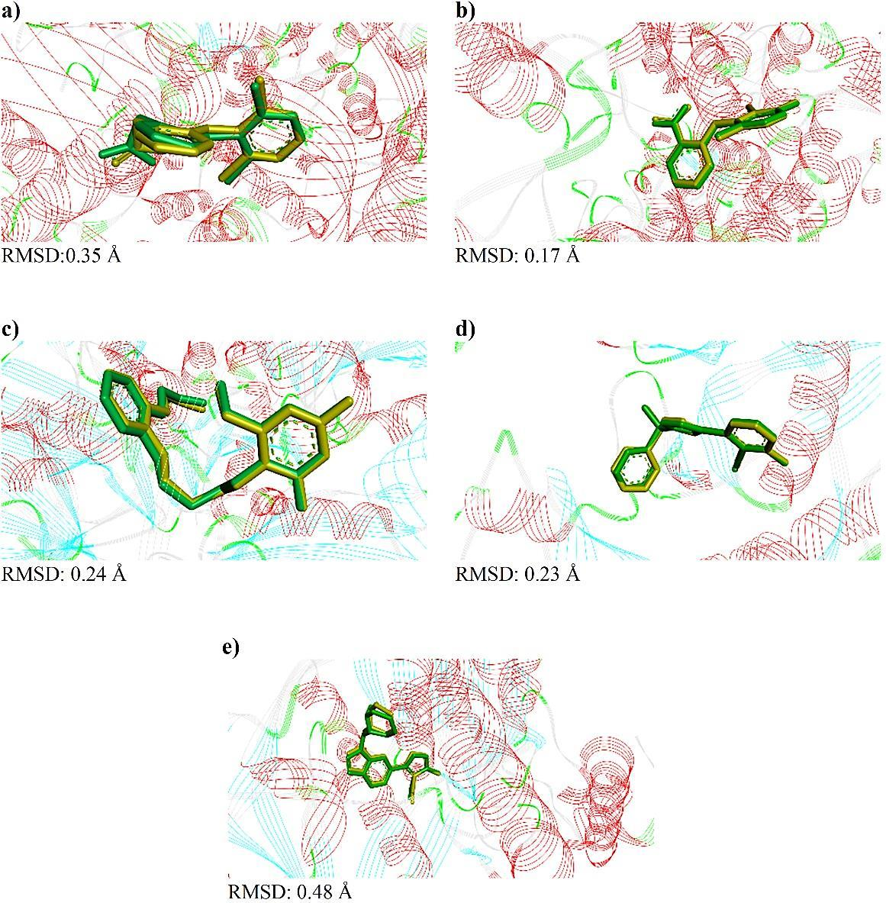
Um composto obteve uma pontuação favorável. O que podemos afirmar?
Base: Moraes-Neto et al., 2022; Torres et al., 2019; Ma et al., 2011.
ESTAÇÃO 2
A analogia da chave e da fechadura ajuda a começar. Moléculas reais, porém, mudam de forma e interagem com o ambiente.
Fischer propõe o modelo chave–fechadura: a forma ajuda a explicar o reconhecimento.
Koshland destaca mudanças conformacionais associadas à ligação.
Kuntz e colaboradores descrevem uma abordagem geométrica para interações entre macromoléculas e ligantes.
O artigo do Vina exemplifica a busca por velocidade e predição de poses. Métodos de aprendizado de máquina ampliam as estratégias de scoring.
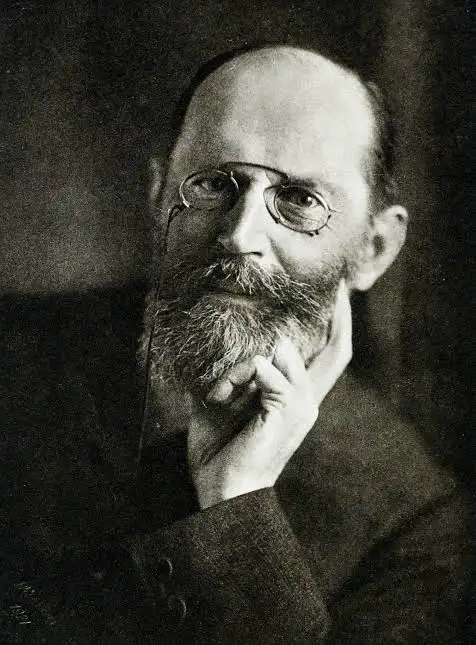
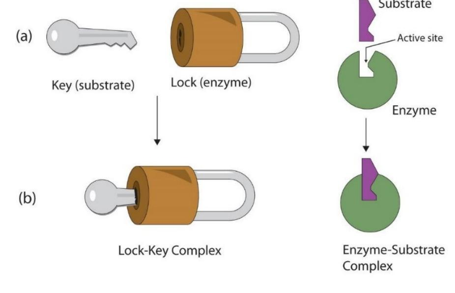
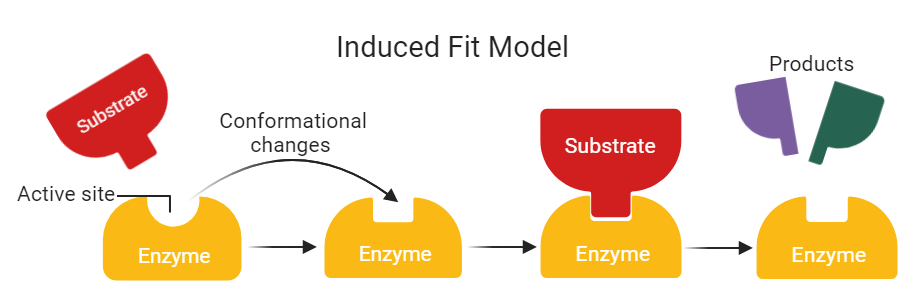
Pense em uma mão procurando se acomodar em uma luva: você pode deslocar a mão, girá-la e dobrar os dedos. Nas moléculas, distinguimos posição, orientação e conformação. Juntas, elas descrevem como o ligante está organizado em relação ao alvo. Se a proteína também mudar de forma, essa conformação faz parte da descrição do complexo.
Explore o modelo: mova um controle de cada vez ou use os botões para comparar exemplos.
Modelo esquemático em duas dimensões para explicar um problema tridimensional. As mudanças ilustram possibilidades; não representam uma trajetória real de ligação nem identificam a melhor pose.
Explorar o exemplo original de pose no DrugDesign.org ↗EXPERIMENTE · MODELO CONCEITUAL
O alvo fica parado neste esquema. Observe o que muda no ligante.
Esquema didático, sem cálculo de energia. A conformação muda por rotações internas, sem mudar a identidade química.
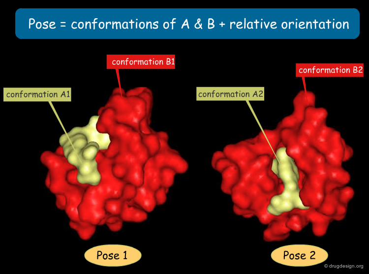
A proteína pode ocupar vários estados antes da ligação. O ligante pode favorecer um deles. Seleção conformacional e encaixe induzido podem contribuir para o mesmo sistema. Em ensemble docking, usamos mais de uma conformação do receptor.
Base: apresentação do Prof. Saulo Mendes; Meng et al., 2011; Trott e Olson, 2010; Li et al., 2020. As datas representam marcos selecionados, não uma história exaustiva.
ESTAÇÃO 3
O encaixe depende da forma e das propriedades químicas. Os átomos precisam chegar perto de um modo que permita contatos favoráveis sem se sobrepor.
No docking convencional desta aula, investigamos principalmente interações não covalentes. Elas envolvem forças entre grupos do ligante e da proteína. Uma ligação covalente ligante–alvo exige outra hipótese e outro protocolo.
Ligação de hidrogênio: um doador com H e um aceptor adequados precisam de distância e orientação compatíveis.
Eletrostática: cargas de sinais opostos se atraem e cargas iguais se repelem. O solvente e os íons influenciam essas interações.
Van der Waals: contatos próximos podem favorecer a complementaridade. Aproximação excessiva produz forte repulsão.
Efeito hidrofóbico: a associação de superfícies apolares depende da reorganização da água. Não é uma ligação química específica entre dois átomos.
MODELO CONCEITUAL INTERATIVO
Grupos fictícios e representação esquemática, sem cálculo de energia. As faixas de distância são apenas ilustrativas e variam com os átomos e o contexto.
Quando ligante e proteína se aproximam, muitos contatos contribuem ao mesmo tempo. Alguns favorecem a associação; outros a dificultam. Imagine tentar acomodar uma peça: partes complementares se aproximam, mas uma região que esbarra na outra impede um bom encaixe.
Contribuições favoráveis: por exemplo, atração entre cargas opostas e contatos de hidrogênio com geometria adequada. Contribuições desfavoráveis: sobreposição de átomos e aproximação de cargas iguais, entre outras. O ambiente modifica essas contribuições.
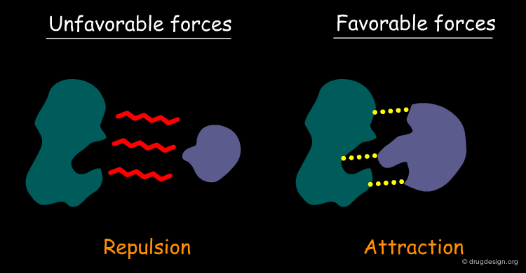
Por que uma pose com muitas ligações de hidrogênio ainda pode ser ruim?
Base: Torres et al., 2019; análise conformacional fornecida; Trott e Olson, 2010. Termos e desenho usados como modelo conceitual, sem representar uma molécula específica.
ESTAÇÃO 4
O programa explora possibilidades e usa uma função de pontuação para avaliá-las.
Desloca e gira o ligante. Explora ligações rotacionáveis. Mais flexibilidade amplia o número de possibilidades.
Estima o quanto uma pose é favorável segundo um modelo aproximado. O algoritmo usa essa informação para conduzir a busca.
Reúne poses parecidas em clusters e apresenta soluções representativas. A primeira linha merece inspeção, não aceitação automática.
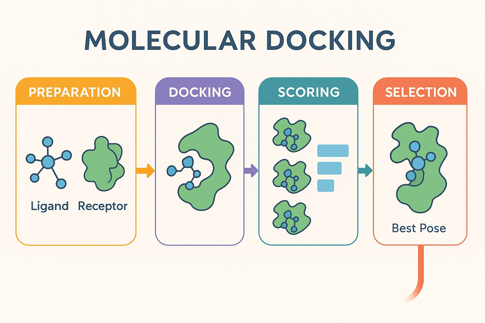
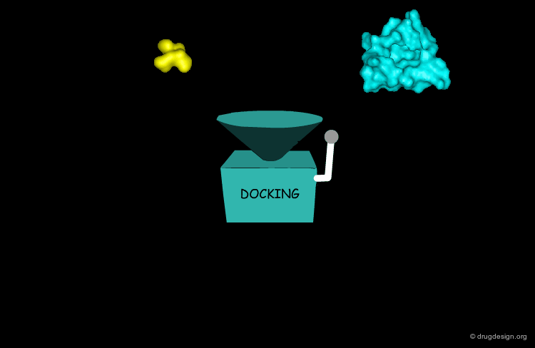
DO PONTO DE VISTA DO PESQUISADOR
Imagine entregar ao computador dois modelos de peças e pedir: “Quais arranjos vale a pena investigar?” Explore cada etapa para abrir essa caixa.
Usamos modelos 3D preparados do alvo e do ligante, uma região de busca e parâmetros. A qualidade dessas entradas influencia os resultados.
Animação conceitual própria, sem cálculo molecular. As poses A, B e C são hipóteses, não medidas experimentais.
Ver a abordagem de caixa preta no DrugDesign.org ↗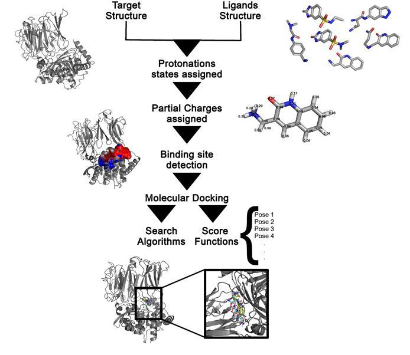
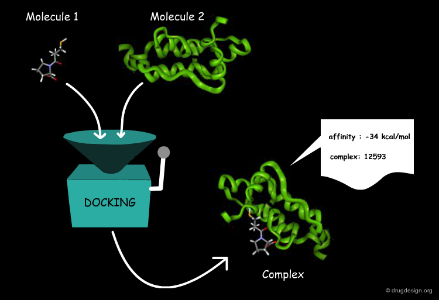
| Abordagem | O que varia | Consequência |
|---|---|---|
| Corpo rígido | Posição e orientação | Menos graus de liberdade, menor adaptação |
| Ligante flexível | Também torsões do ligante | Busca mais ampla e maior custo |
| Receptor flexível ou ensemble | Parte da proteína ou várias conformações | Representa mais estados, com maior complexidade |
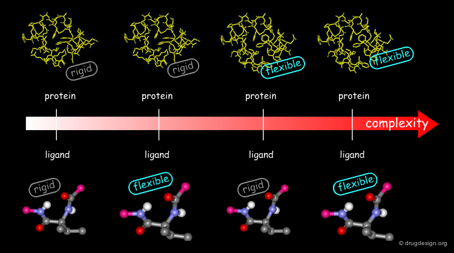
Docking de uma molécula investiga poses. Triagem virtual repete uma estratégia de seleção para muitas moléculas. Docking reverso explora possíveis alvos de um ligante e exige cuidado adicional na comparação entre proteínas.
Funções podem usar campos de força, ajustes empíricos, estatísticas de estruturas ou aprendizado de máquina. Cada abordagem simplifica o sistema. No DockThor, a busca combina algoritmo genético com o campo MMFF94S. O DockTScore estima afinidade para ordenar ligantes. No Vina, a função e a estratégia de busca são diferentes. Números produzidos por métodos diferentes não formam uma escala universal.
Scoring também aproxima custos como dessolvatação e perda de liberdade conformacional. Contar ligações de hidrogênio isoladamente não fornece a afinidade.
A busca pode deixar de encontrar uma pose plausível. Mesmo quando a encontra, a função de pontuação pode ordená-la mal. Essas falhas são diferentes. Aumentar o esforço de busca pode ajudar na primeira, mas não corrige automaticamente um modelo de pontuação inadequado.
Base: Torres et al., 2019; Li, Fu e Zhang, 2019; Dias e Azevedo, 2008; tutorial DockThor.
ESTAÇÃO 5
Uma pose pode mostrar bons contatos e ainda esconder custos. Para interpretar o docking, precisamos comparar o ligante em solução com o complexo formado — incluindo a proteína e o solvente.
Mudança no balanço energético. Inclui contatos formados, desfeitos e reorganizados. Na ligação, observe também o que se perde com a água.
H = U + pV. ΔH compara os estados final e inicial. A pressão constante e com apenas trabalho de expansão, corresponde ao calor trocado. ΔH negativo contribui favoravelmente para a associação; positivo, desfavoravelmente.
Mudança nas possibilidades microscópicas do sistema. Ligante, proteína e água podem ganhar ou perder estados acessíveis.
Entropia se relaciona às probabilidades dos microestados. Não é apenas desordem nem velocidade de movimento. A contribuição à energia livre é −TΔS: ΔS positivo contribui favoravelmente; negativo, desfavoravelmente.
O resultado conjunto. ΔG = ΔH − TΔS. Um ganho pode compensar um custo; nenhum contato decide sozinho a afinidade.
A temperatura e pressão constantes, ΔG negativo favorece o avanço da associação nas condições consideradas; no equilíbrio, ΔG da reação é zero. A energia livre padrão de ligação depende de estados de referência consistentes. Espontaneidade não significa rapidez nem conversão completa.
DOS CONCEITOS ÀS MOLÉCULAS
No sítio de ligação, precisamos considerar os contatos com a proteína e as mudanças no solvente. Dois exemplos ajudam a visualizar:
Um ΔH negativo significa que a associação libera calor a pressão constante, quando há apenas trabalho de expansão. Isso pode envolver ganhos com:
Mas há uma troca: formar esses contatos pode exigir desfazer contatos favoráveis com a água e reorganizar as moléculas. O ΔH é o saldo dessas mudanças — não uma contagem de ligações fortes.
ΔH negativo não significa encaixe perfeito nem comprova alta afinidade. Ainda precisamos considerar a entropia e o ΔG.
O ligante costuma perder liberdade relativa à proteína ao se ligar. Mesmo assim, o ΔS do sistema pode ser positivo se outras contribuições compensarem essa restrição.
Efeito hidrofóbico: a associação de regiões apolares pode reduzir sua exposição à água. A reorganização do solvente participa desse efeito, com contribuições entálpicas e entrópicas que dependem do sistema.
Liberar água não garante ΔS total positivo: o ganho não supera necessariamente as restrições do ligante e da proteína. A água liberada também não tem liberdade ilimitada.
Agora explore: no modelo abaixo, compare “Novos contatos” com “Água reorganizada”. Na animação seguinte, acompanhe as águas que deixam a interface. Essas imagens ajudam a levantar hipóteses, mas não medem ΔH ou ΔS.
UM ÚNICO EXEMPLO · ACOMPANHE O MESMO LIGANTE
Mesmo ligante, quatro aspectos de comparação. Não é uma sequência temporal simulada nem um cálculo de energia. Os contornos extras representam estados alternativos, não outras moléculas.
Antes de se ligar à proteína, ele faz contatos com a água e pode explorar posições, orientações e conformações. Este é o estado com o qual precisamos comparar o complexo.
Uma pose isolada não mostra o conjunto de estados em solução. O número do complexo sozinho não fornece a energia livre de ligação.
VEJA O SOLVENTE
Veja as águas saindo da região em que o ligante se acomoda. Desfazer contatos com o solvente pode custar energia; novos contatos e a reorganização da água podem compensar esse custo.
Professor: é como trocar de parceria: você ganha um contato com a proteína, mas pode perder contatos com a água. Precisamos comparar a troca inteira, e não só a nova ligação.
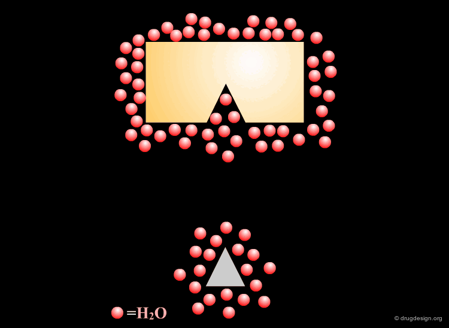
APLIQUE À INTERPRETAÇÃO
Há geometria adequada e ausência de choques? Contatos podem contribuir favoravelmente, mas o desenho não mede ΔH.
O encaixe exige restringir muitas possibilidades? Flexibilidade afeta a busca e pode trazer custos entrópicos; uma pose só não quantifica isso.
Quais contatos com a água foram substituídos? Águas conservadas podem mediar a ligação. Retirar água indiscriminadamente pode perder informação.
No software: o score aproxima esses efeitos de formas diferentes. No Vina original, por exemplo, há termos de contatos e um ajuste relacionado às ligações rotacionáveis. Isso não é uma medição separada de ΔH e ΔS nem uma descrição completa do solvente.
EXPLORAÇÃO GUIADA · SEM FAZER CONTAS
Escolha um cenário e compare as contribuições. Todos são exemplos fictícios para discussão.
As barras apenas ilustram o raciocínio. Não representam medidas, energias calculadas ou uma decomposição quantitativa de ΔG.
A: muitos contatos aparentes, mas depende de uma conformação muito restrita. B: menos contatos aparentes, mas exige menor restrição. Não podemos eleger o melhor só com essas descrições: falta comparar intensidades dos contatos, dessolvatação, reorganização do alvo e demais contribuições sob condições consistentes. O exercício ensina quais perguntas fazer; não prevê um vencedor real.
O capítulo de Gomes et al. destaca que a energia livre é função de estado. Para a associação, com estados de referência consistentes, ΔG° ligação = G° complexo − G° proteína − G° ligante. O ambiente deve ser tratado de modo consistente. O processo inverso tem sinal oposto.
Em um ciclo termodinâmico fechado consistente, as variações de energia livre somam zero. Isso permite relacionar etapas de cálculo sem exigir que elas sejam o caminho físico de associação. Cálculos de energia livre com simulações e docking convencional são métodos distintos.
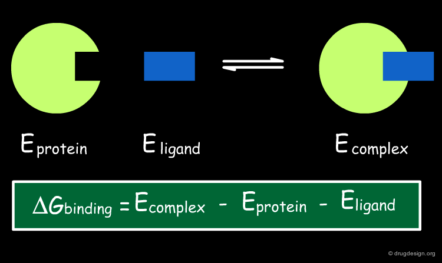
Uma diferença de energias potenciais não é automaticamente uma diferença de energia livre: não inclui por si só toda a contribuição entrópica e do solvente.
A relação é ΔG = ΔH − TΔS. T representa a temperatura. Um ΔH negativo contribui favoravelmente. Um ΔS positivo também favorece a associação pelo termo −TΔS. Os controles abaixo permitem explorar os sinais, sem serem necessários para acompanhar a aula ou jogar.
T em kelvin. Use unidades compatíveis: neste modelo, ΔH em kJ/mol e ΔS em J/(mol·K), com conversão por 1.000.
EXPERIMENTE O BALANÇO · VALORES FICTÍCIOS
Ao variar T, mantemos ΔH e ΔS constantes apenas para explorar a equação. Em um sistema real eles também podem variar com a temperatura.
Síntese didática: Torres et al., 2019, p. 5–6; Li, Fu e Zhang, 2019, p. 2–3; Trott e Olson, 2010, p. 3–4; Tonolo et al., 2023, p. 6–7; Gomes et al., 2023, p. 174–189. Os estudos de produtos naturais do projeto apoiam a ligação entre predição e experimento. Modelos e cenários são qualitativos.
ESTAÇÃO 6
A pose faz sentido químico? O protocolo recupera um modo de ligação conhecido? O resultado ajuda a decidir o próximo experimento?
Partimos de uma estrutura experimental do complexo proteína–ligante. Retiramos o ligante, preparamos as estruturas e executamos o docking para tentar recuperar sua posição no sítio. Depois comparamos a pose prevista com a experimental.
RMSD vem de Root Mean Square Deviation: raiz da média dos quadrados dos desvios. É uma medida da diferença geométrica entre duas estruturas, calculada a partir das distâncias entre átomos correspondentes.
Imagine sobrepor dois desenhos da mesma molécula: um representa o experimento; o outro, a previsão. Se os átomos quase coincidem, o RMSD é baixo. Se ficam afastados, o RMSD aumenta.
A unidade usual é o ångström (Å): 1 Å = 0,1 nanômetro. Em redocking, é comum comparar os átomos pesados, isto é, os átomos diferentes de hidrogênio.
Para cada par de átomos correspondentes, calculamos a distância d. Elevamos cada distância ao quadrado, fazemos a média e extraímos a raiz: RMSD = √[(d₁² + d₂² + … + dₙ²)/N]. Assim, desvios maiores têm mais peso; não é uma média simples das distâncias.
As poses devem estar no mesmo referencial da proteína. Se necessário, alinhamos os receptores e aplicamos essa transformação aos ligantes. Superpor livremente apenas os ligantes pode esconder um deslocamento ou giro incorreto no sítio. A correspondência atômica e a simetria química precisam ser consideradas.
O RMSD ajuda a verificar se o protocolo recupera a geometria de uma ligação já conhecida. Um valor em torno de até 2 Å para átomos pesados é um critério frequentemente usado de recuperação de pose, mas não é uma regra universal: depende do ligante, da qualidade estrutural e da forma de calcular.
Se uma pose próxima da referência foi encontrada, mas ficou mal classificada: a busca conseguiu gerar essa solução; a pontuação não a priorizou. Se nenhuma pose próxima foi encontrada: precisamos investigar preparação, região e esforço de busca, flexibilidade e outras limitações.
Confira sempre o que está sendo comparado. No resultado do Vina, por exemplo, as colunas de RMSD podem expressar diferenças em relação ao melhor modo previsto, e não ao ligante experimental. Poses parecidas entre si podem estar todas distantes da referência experimental. Em dinâmica molecular, um gráfico de RMSD também responde a outra comparação e não equivale, por si só, à validação por redocking.
Programas de docking podem apresentar pontuações e energias com definições diferentes. Um valor pode ajudar a ordenar poses e outro a comparar ligantes. Antes de interpretar um número, precisamos saber o que ele representa e como foi obtido. Compare resultados de protocolos consistentes.
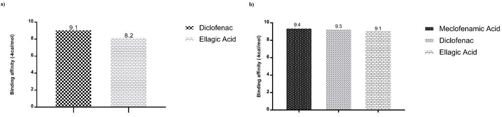
DISCUSSÃO · VALORES FICTÍCIOS
| Pose do mesmo ligante | Score ilustrativo | RMSD à referência | Inspeção |
|---|---|---|---|
| A | −9,0 | 4,8 Å | Perde contatos do ligante experimental |
| B | −8,7 | 1,4 Å | Recupera a orientação e contatos relevantes |
A pose B. O RMSD menor indica maior semelhança geométrica nesse exemplo. A diferença de 0,3 na pontuação não estabelece uma diferença real de afinidade. Examine também se o algoritmo encontrou a pose correta e se a função de pontuação conseguiu colocá-la em primeiro lugar.
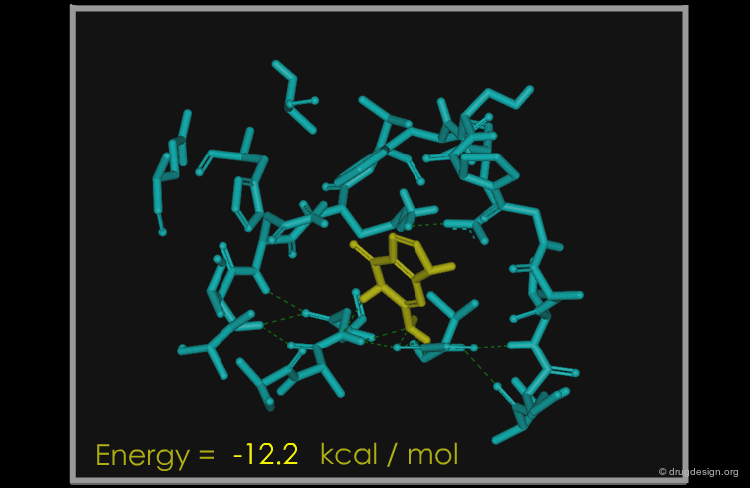
A busca explora apenas parte das possibilidades e a pontuação simplifica a física da ligação. Por isso, uma pose pode parecer boa no modelo e não corresponder ao que ocorre no experimento.
Verifique sobreposições, contatos e coerência com o sítio. Um número isolado não conta toda a história.
Confira estruturas conhecidas e ensaios. Redocking testa a recuperação de uma pose; outros métodos podem complementar a análise. Concordância não garante acerto, pois os métodos podem compartilhar erros.
Ensaios de ligação e de atividade respondem perguntas diferentes. Mutação de um resíduo pode ajudar a investigar seu papel, desde que se controlem efeitos na estrutura e função da proteína.
Pergunta-chave: “Qual experimento pode confirmar ou enfraquecer esta hipótese?” O docking convencional não demonstra sozinho se duas moléculas se ligam nem mede diretamente sua afinidade.
Docking busca poses sob simplificações. Dinâmica molecular explora a evolução de um modelo ao longo de uma trajetória e pode examinar mobilidade e persistência de contatos. Uma trajetória aparentemente estável também não prova ligação, afinidade ou eficácia. Ensaios bioquímicos, celulares e outras medidas respondem perguntas diferentes e complementares.
Base: Torres et al., 2019; Trott e Olson, 2010; revisão de produtos naturais de 2026; artigo de ácido elágico; documentação DockThor.
ESTAÇÃO 7
Uma fração de origem vegetal apresentou um efeito interessante em laboratório. Sua equipe precisa descobrir o que vale investigar e como reunir evidências, sem pular etapas.
EXPEDIÇÃO BIOPRODUTOS
O percurso passa pela origem da amostra, identificação química, escolha do alvo, docking, interpretação dos resultados e decisão sobre o próximo experimento.
Cada rodada reúne uma situação, sua decisão e a discussão conduzida pelo professor. O jogo valoriza o raciocínio e a qualidade da evidência, sem bônus de velocidade.
Entrar no tabuleiro ↗Painel do professor ↗O professor conduz o ritmo das rodadas e abre espaço para discutir as justificativas antes de avançar.
O botão de demonstração do jogo permite conduzir a discussão pela projeção, com decisões por equipes. Esse modo não sincroniza celulares. A sala simultânea depende do serviço de jogo estar disponível.
ESTAÇÃO 8
Uma hipótese estrutural torna a pesquisa mais informada quando ela se conecta a uma pergunta experimental.
O artigo combina caracterização química, predições computacionais e modelos experimentais. O docking ajuda a propor interações do ácido elágico com alvos selecionados. Os ensaios sustentam os efeitos medidos em cada modelo; eles não identificam automaticamente um mecanismo molecular único.
Qual fonte de bioprodutos você investiga? Há uma substância identificada? Qual alvo tem relação com o efeito observado? Que experimento separaria ligação direta, atividade funcional e efeito inespecífico?
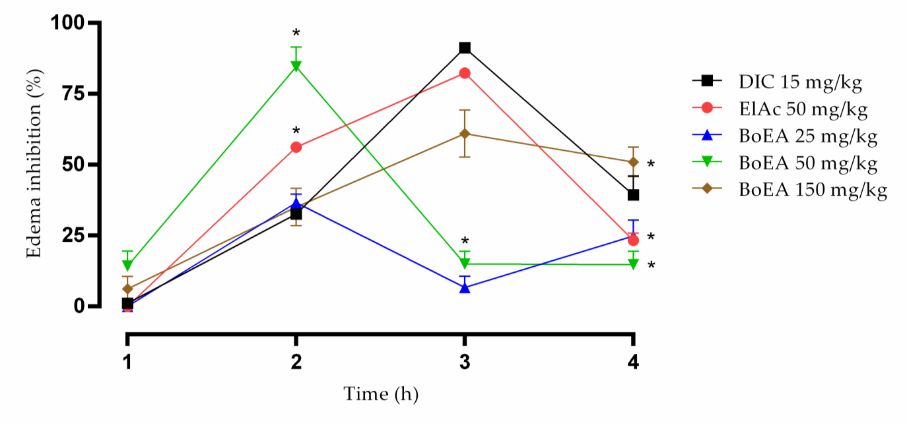
O redocking gerou RMSD de 1,4 Å. Qual conclusão é adequada?
PARA EXPLORAR DEPOIS DA AULA
Estas ferramentas permitem realizar docking online, sem instalar o programa de docking no computador. Explore com uma pergunta definida e confira a preparação das moléculas.
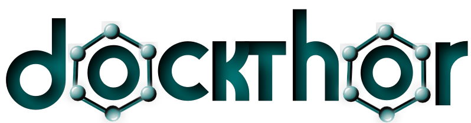
Servidor brasileiro do LNCC para docking proteína–ligante, com recursos de preparação e análise.
Acessar DockThor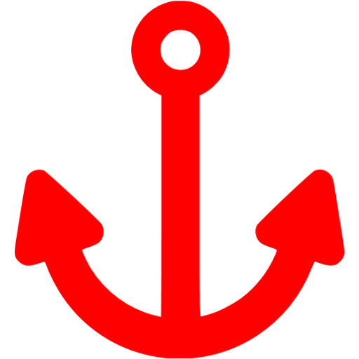
Interface online para docking de pequenas moléculas, com exemplos prontos e opção de AutoDock Vina.
Acessar SwissDockLinks e logotipos consultados nos sites oficiais em 19/10/2026. Acesso online facilita a operação; a qualidade da hipótese e a avaliação dos resultados continuam essenciais.
BIBLIOTECA DA AULA
Explore o percurso principal e o jogo no ritmo da turma. As leituras e figuras abaixo ampliam os tópicos, sem acrescentar atividades obrigatórias.
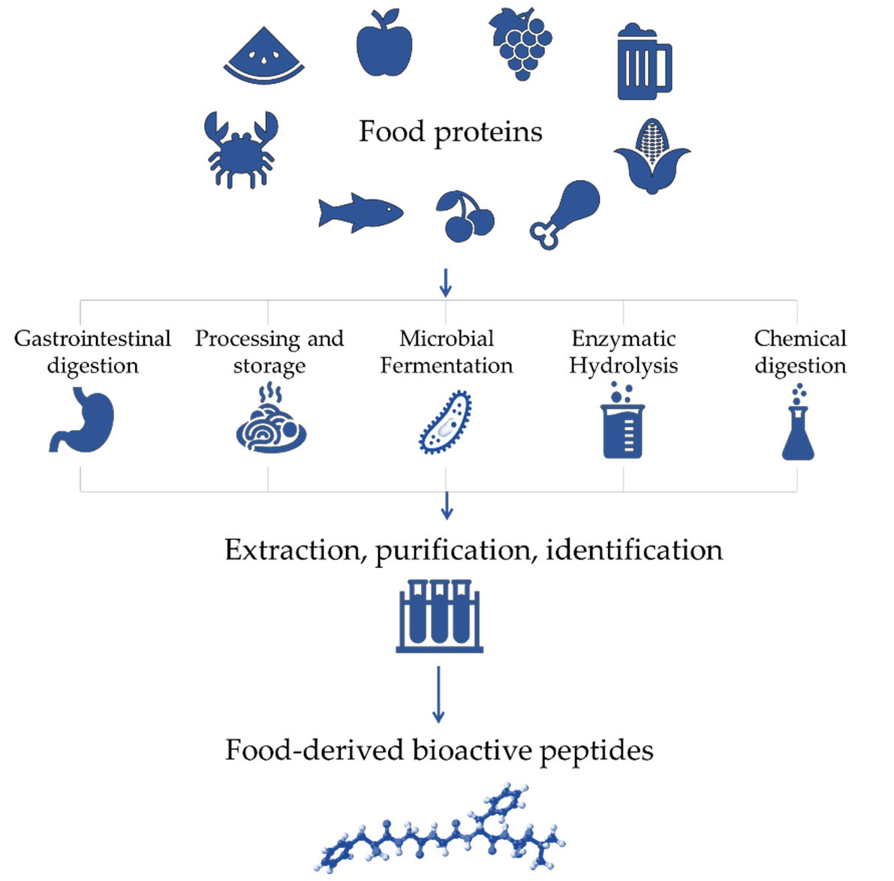
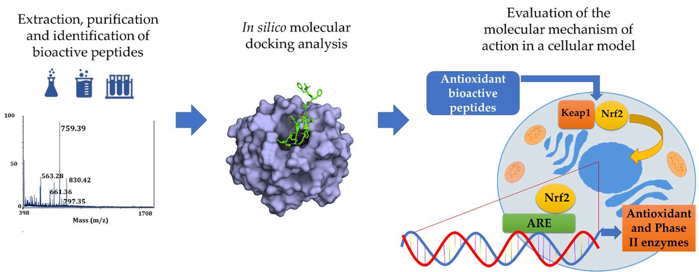
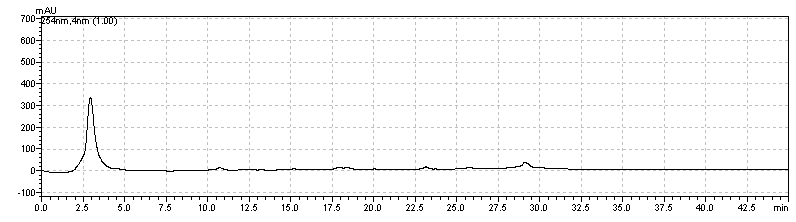
A apresentação original orientou a progressão conceitual e histórica. A análise conformacional fundamentou o vocabulário de flexibilidade. O artigo do Vina apoiou a distinção entre busca e scoring. Os tutoriais de ancoragem, GOLD e DockThor apoiaram os conceitos usados nos desafios de docking e redocking. As revisões fundamentaram algoritmos, pontuação, triagem de produtos naturais, polifarmacologia e limites de inferência. Os estudos de iNOS, Bryophyllum, RSV, peptídeos e ácido elágico forneceram exemplos e questões de leitura crítica. O material de 2010 sobre scoring complementou essa discussão.
As instruções dos tutoriais foram tratadas como material de referência, com adaptação ao objetivo desta aula. Informações históricas, interfaces antigas e afirmações clínicas não foram automaticamente adotadas como descrições atuais. Consulte o inventário e os créditos completos.